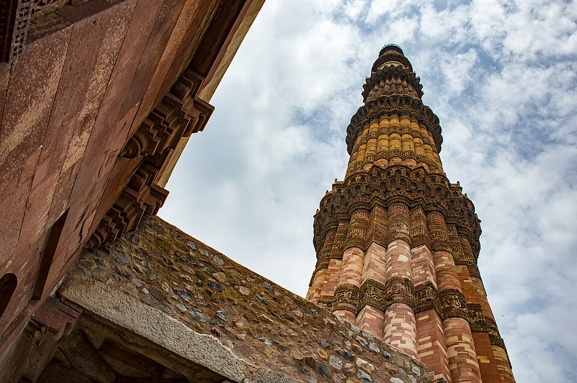
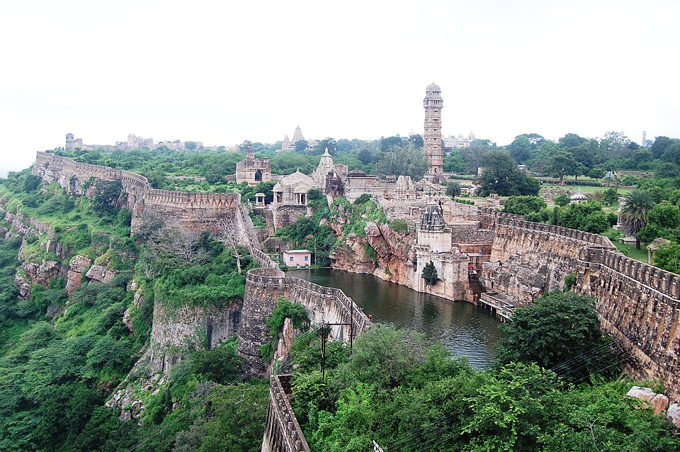

Mughal Empire — Babur to Aurangzeb & Administration
📂 Medieval History⚖️ Weight: 0.7🎯 Expected: 1–2 Qs🔶 Bihar: Sher Shah Suri (Sasaram) + Mughal province of Bihar
📚 Core Content
EXAM TIPMughal Empire (1526-1857, 331 years): Six Great Mughals: Babur (1526-1530, Panipat), Humayun (1530-1540, 1555-1556, exiled by Sher Shah), Akbar (1556-1605, greatest — Sulh-i-Kul, Din-i-Ilahi, Navaratna, Zabt), Jahangir (1605-1627, painting, Nur Jahan), Shah Jahan (1628-1658, architecture — Taj Mahal, Red Fort), Aurangzeb (1658-1707, Deccan, reimposed jaziya 1679, last Great Mughal). Key battles: Panipat I (1526), Khanwa (1527), Chausa (1539), Kannauj (1540), Panipat II (1556). Sher Shah Suri (Sasaram, Bihar) interrupted 1540-1555 — his reforms (Zabt, Rupiah, GT Road) were adopted by Akbar.

Indo-Islamic architecture reached its zenith under the Mughals (1526–1857). Babur founded the empire after Panipat (1526). Akbar (1556–1605) built Fatehpur Sikri, introduced Sulh-i-Kul (universal tolerance), and created the Mansabdari system. Shah Jahan built the Taj Mahal, Red Fort, and Jama Masjid. Bihar connection: Sher Shah Suri (Sasaram, Bihar) ruled 1540–1545 between Humayun's two reigns — his reforms were adopted by Akbar.

Mughal-Rajput relations — Akbar forged strategic alliances with Rajput kingdoms through matrimonial ties (Amber/Jaipur, Jodhpur, Bikaner). Rajputs served as high-ranking Mansabdars in the Mughal army. However, Maharana Pratap of Mewar resisted Akbar at the Battle of Haldighati (1576). Chittorgarh Fort fell to Akbar in 1568 — the third and final jauhar.
💡 Deep-dive ready: Complete analysis of all six Great Mughals, battles, administrative systems, Sher Shah's reforms, Bihar connections, and 7 exam predictions:
Mughal Empire Master Detail →
A. The Six Great Mughals — Overview EXAM CORE
#
Emperor
Reign
Key Achievements
1
Babur
1526-1530
Founded Mughal Empire (Panipat I, 1526); defeated Rana Sanga (Khanwa, 1527); Tuzuk-i-Baburi (Baburnama); introduced gunpowder warfare
2
Humayun
1530-1540, 1555-1556
Exiled by Sher Shah Suri (1540-1555); returned with Persian aid; died falling from library stairs (1556); his sister Gulbadan wrote Humayunama
3
Akbar
1556-1605
Greatest Mughal; regent Bairam Khan; abolished jaziya (1564); Din-i-Ilahi (1582); Navaratna; Zabt system (Todarmal); Fatehpur Sikri; Akbarnama (Abul Fazl); Sulh-i-Kul
4
Jahangir
1605-1627
Golden age of painting; Nur Jahan (most powerful empress); Tuzuk-i-Jahangiri; executed Guru Arjun (1606); William Hawkins (English ambassador)
5
Shah Jahan
1628-1658
Golden age of architecture; Taj Mahal (1632-1653), Red Fort, Jama Masjid; Peacock Throne; shifted capital to Shahjahanabad (Delhi, 1648); imprisoned by Aurangzeb
6
Aurangzeb
1658-1707
Last Great Mughal; 25-year Deccan campaign; annexed Bijapur (1686) & Golconda (1687); reimposed jaziya (1679); executed Guru Tegh Bahadur (1675); empire at greatest extent but decline began
🧠 Fact Matrix & Key Data
B. Key Battles of the Mughal Era PYQ PATTERN
Battle
Year
Fought Between
Result
First Panipat
1526
Babur vs Ibrahim Lodi
Babur won — founded Mughal Empire; first use of artillery in India
Khanwa
1527
Babur vs Rana Sanga (Mewar)
Babur won — defeated Rajput confederacy; took title 'Ghazi'
Chausa
1539
Sher Shah Suri vs Humayun
Sher Shah won — Humayun fled; Bihar-Afghan connection
Kannauj (Bilgram)
1540
Sher Shah vs Humayun
Sher Shah won — Humayun exiled to Persia (1540-1555); Sur Dynasty established
Second Panipat
1556
Akbar (Bairam Khan) vs Hemu
Akbar won — secured Mughal future; Hemu killed
Haldighati
1576
Akbar (Man Singh) vs Maharana Pratap
Inconclusive — Pratap continued guerrilla warfare; Mughal tactical victory
C. Mughal Administrative System EXAM CORE
System
Introduced/Perfected by
Features
Zabt (land revenue)
Sher Shah Suri → perfected by Todarmal (Akbar)
Land measured and classified (polaj/parauti/banjar); tax = 1/3 of produce, payable in cash; based on Sher Shah's system
Mansabdari
Akbar (1571)
Military-civil bureaucracy; each mansabdar (officer) had a rank (zat) and troop obligation (sawar); salaries paid in cash or jagir (land assignment)
Poet; son of Bairam Khan; wrote Rahim ke Dohe (Hindi couplets)
8
Mulla Do-Piyaza
Wit and humorist; often paired with Birbal in anecdotes
9
Fakir Aziao-Din
Sufi advisor; gave spiritual counsel to Akbar
🧠 Mnemonic — B-H-A-J-S-A: Babur (1526) → Humayun (1530) → Akbar (1556) → Jahangir (1605) → Shah Jahan (1628) → Aurangzeb (1658). "BHAJSA: the six Great Mughals in order. Akbar = greatest, Shah Jahan = architecture, Aurangzeb = last."
🔶 Bihar Connection
Bihar — Sher Shah Suri (Sasaram) & the Mughal Province of Bihar
Sher Shah Suri (1486-1545, Sasaram, Bihar): the Afghan ruler who interrupted Mughal rule (1540-1555). Born in Sasaram (Rohtas district, Bihar). His grand tomb at Sasaram (built 1540-1545, architect Mir Muhammad Aliwal Khan) is an architectural masterpiece — set in the middle of an artificial lake. It is one of the finest examples of Indo-Afghan architecture and a potential UNESCO World Heritage Site.
Sher Shah's reforms (adopted by Akbar): (1) Zabt land revenue system (standardised by Todarmal under Akbar); (2) Rupiah (silver coin) and Paisa (copper coin) — the basis of modern Indian currency; (3) Grand Trunk Road (Sadak-e-Azam) from Sonargaon to Peshawar, with sarais and postal stations; (4) efficient spy system; (5) army reforms (direct payment to soldiers). Akbar built on Sher Shah's administrative foundation.
Battle of Chausa (1539, Bihar): Sher Shah defeated Humayun at Chausa (Buxar area, Bihar). This was the beginning of Humayun's exile. The Battle of Kannauj (1540) confirmed Sher Shah's victory. Humayun fled to Persia. Sher Shah ruled from Delhi (1540-1545), but his roots were in Bihar (Sasaram).
Bihar as a Mughal Suba (province): under Akbar, Bihar was one of the 15 Subas. The Suba of Bihar included modern Bihar and parts of Bengal. The Subedar (governor) of Bihar was a key Mughal official. Bihar was strategically important — on the route between Delhi (imperial capital) and Bengal (the richest province). Patna was the provincial capital.
Patna under the Mughals: Sher Shah built a fort at Patna (Patna Fort/Pataliputra). During the Mughal period, Patna became a major trading centre — for saltpetre, cotton, and silk. The English established a factory at Patna (1620, during Jahangir's reign) — one of the earliest English trading posts in India. Bihar's economy flourished under Mughal rule.
Mughal-Bihar cultural legacy: Bihar produced important Mughal-era figures — Dara Shikoh (the Sufi prince) spent time in Bihar; Azimabad (the Mughal name for Patna, named after Prince Azim-us-Shan) was a cultural centre; Bihar's Sufi tradition (Maner Sharif, Phulwari Sharif) continued to flourish under Mughal patronage.
🔗 Cross-Topic Connections
Topic 138 (Delhi Sultanate): The Mughal Empire replaced the Delhi Sultanate at the First Battle of Panipat (1526). Ibrahim Lodi (last Sultan) was defeated by Babur. The Mughals inherited the Sultanate's administrative systems (Iqta → Jagir, Sultan → Padshah).
Topic 139 (Bhakti & Sufi): The Bhakti and Sufi movements reached their peak during the Mughal period. Akbar was influenced by Sufi saints (Salim Chishti of Fatehpur Sikri). Dara Shikoh followed the Qadiri Sufi order and translated the Upanishads. Tulsidas wrote the Ramcharitmanas during Akbar's reign (c. 1574).
Topic 142 (Bihar in Medieval): Sher Shah Suri (from Sasaram, Bihar) is the most important medieval figure from Bihar. His administrative reforms (Zabt, Rupiah, GT Road) became the foundation of Mughal administration under Akbar. Bihar was a key Mughal province (Suba) with Patna as its capital.
📰 Current Relevance
Taj Mahal: UNESCO World Heritage Site (1983) and one of the New Seven Wonders of the World (2007). It attracts ~7-8 million visitors annually — one of India's most iconic monuments and a symbol of love.
Fatehpur Sikri: UNESCO World Heritage Site (1986). Akbar's abandoned capital near Agra — featuring the Buland Darwaza (52m high), Jama Masjid, and Salim Chishti's dargah. A masterpiece of Mughal architecture.
Red Fort (Delhi): UNESCO World Heritage Site (2007). Built by Shah Jahan (1639-1648). The Indian Prime Minister addresses the nation from its ramparts every Independence Day (August 15) — a living symbol of India's independence.
Grand Trunk Road (GT Road): Sher Shah Suri's road (from Chittagong to Kabul) is still in use today as NH-19 (part of it). It passes through Bihar (Patna, Aurangabad, Sasaram) — connecting the state to the national highway network. One of Asia's oldest and longest major roads.
Sher Shah Suri's tomb (Sasaram, Bihar): a potential UNESCO World Heritage Site. It is one of Bihar's most important historical monuments — attracting tourists and researchers. It represents the Indo-Afghan architectural tradition at its finest.
Mughal painting: the Mughal miniature painting tradition (especially under Jahangir) influenced Indian art for centuries. Artists like Ustad Mansur (animal paintings) and Abul Hasan are still celebrated. The tradition continues in modern Indian art.
✍️ MCQ Practice Set — 25 Questions (BPSC Level)
Test your knowledge. Select the best answer for each question, then click "Check Answers" to see your score and explanations.
Your Score: 0/25
Q1. The Mughal Empire in India was founded by Babur after which battle in 1526?
✅ Correct Answer: (D) — Babur founded the Mughal Empire after the First Battle of Panipat (April 21, 1526). He defeated Ibrahim Lodi using artillery and matchlocks. Babur was a descendant of Timur (father) and Genghis Khan (mother). His memoir is the Tuzuk-i-Baburi (Baburnama).
Q2. Babur was a descendant of which two famous conquerors?
✅ Correct Answer: (C) — Babur was descended from Timur through his father and Genghis Khan through his mother. 'Mughal' = Persian for 'Mongol.' Babur was from Fergana (modern Uzbekistan).
Q3. The First Battle of Panipat (1526) was significant because:
✅ Correct Answer: (D) — The First Battle of Panipat (1526) ended the Delhi Sultanate (1206-1526) and began the Mughal Empire (1526-1857). Babur's 12,000 troops defeated Ibrahim Lodi's 100,000-strong army using artillery (tulghuma tactic). Gunpowder warfare was introduced to India.
Q4. The Battle of Khanwa (1527) was fought between Babur and which Rajput ruler?
✅ Correct Answer: (C) — The Battle of Khanwa (March 1527) was between Babur and Rana Sanga (Sangram Singh), ruler of Mewar. Rana Sanga led a Rajput confederacy. Babur won using artillery and took the title 'Ghazi.' This established Mughal power in north India.
Q5. Humayun, the second Mughal emperor, was forced into exile by which Afghan ruler?
✅ Correct Answer: (D) — Sher Shah Suri (from Sasaram, Bihar) defeated Humayun at Chausa (1539) and Kannauj (1540). Humayun fled to Persia and returned in 1555. The Sur Dynasty ruled 1540-1555. Sher Shah's tomb is at Sasaram (Bihar).
Q6. The Second Battle of Panipat (1556) was fought between Akbar's forces and which opponent?
✅ Correct Answer: (D) — The Second Battle of Panipat (Nov 5, 1556) was between 13-year-old Akbar (regent Bairam Khan) and Hemu (Hindu minister of Sur Dynasty). Hemu was winning but was struck by an arrow in the eye and captured. Bairam Khan beheaded him. This secured the Mughal Empire's future.
Q7. Akbar's regent (guardian) during his minority was which noble?
✅ Correct Answer: (C) — Bairam Khan was Akbar's regent (1556-1560). He won the Second Battle of Panipat (1556). In 1560, Akbar (now 18) dismissed him. Bairam Khan was assassinated in 1561. His son Rahim became a famous Hindi poet (Rahim ke Dohe).
Q8. Akbar abolished the jaziya (poll tax on non-Muslims) in which year?
✅ Correct Answer: (C) — Akbar abolished the jaziya in 1564 CE — a landmark step in religious tolerance. He had abolished the pilgrimage tax on Hindus in 1563. His Sulh-i-Kul (universal peace) policy treated all religions equally. He founded the Din-i-Ilahi (1582).
Q9. Akbar's new religion 'Din-i-Ilahi' (Divine Faith) was founded in which year?
✅ Correct Answer: (A) — Akbar founded the Din-i-Ilahi (Divine Faith) in 1582 CE. It was a syncretic religion combining Islam, Hinduism, Zoroastrianism, Jainism, and Christianity. Only 18 people joined (including Abul Fazl and Birbal). It died with Akbar in 1605.
Q10. Akbar's land revenue system, known as the 'Zabt system', was standardized by which finance minister?
✅ Correct Answer: (C) — Raja Todarmal standardized the Zabt system (1582-1589) — land was measured and classified by productivity (polaj/parauti/banjar). Tax was 1/3 of produce, payable in cash. Based on Sher Shah Suri's earlier reforms (Bihar connection). Todarmal was one of Akbar's Navaratna.
Q11. The term 'Navaratna' (Nine Gems) refers to:
✅ Correct Answer: (D) — Akbar's Navaratna: (1) Birbal (wit), (2) Tansen (musician), (3) Todarmal (revenue), (4) Abul Fazl (historian), (5) Faizi (poet), (6) Raja Man Singh (general), (7) Abdul Rahim (poet), (8) Mulla Do-Piyaza (wit), (9) Fakir Aziao-Din (sufi advisor).
Q12. The 'Akbarnama', the official history of Akbar's reign, was written by which court historian?
✅ Correct Answer: (D) — Abul Fazl wrote the Akbarnama in Persian — three volumes: (1) Akbar's ancestors, (2) Akbar's reign events, (3) Ain-i-Akbari (administrative document). Abul Fazl was assassinated by Prince Salim (later Jahangir) in 1602.
Q13. Akbar's capital city, Fatehpur Sikri, was built near which Sufi saint's khanqah?
✅ Correct Answer: (C) — Fatehpur Sikri (1571) was built near Sheikh Salim Chishti's khanqah. Salim Chishti predicted the birth of Akbar's son (Salim/Jahangir, 1569). The city was abandoned by 1585 (water scarcity). UNESCO site (1986). The Buland Darwaza (52m) commemorates Akbar's Gujarat victory (1573).
Q14. Jahangir (1605-1627) is known for which artistic and political feature of his reign?
✅ Correct Answer: (D) — Jahangir's reign was the golden age of Mughal painting (naturalistic style, Ustad Mansur for animal paintings). His wife Nur Jahan (married 1611) became the most powerful Mughal empress — coins were struck in her name. He wrote the Tuzuk-i-Jahangiri.
Q15. Nur Jahan, the most powerful Mughal empress, was the wife of which emperor?
✅ Correct Answer: (A) — Nur Jahan married Jahangir in 1611 and became the most powerful Mughal empress. She issued royal farmans and coins were struck in her name (unique for a Mughal empress). Her niece Mumtaz Mahal married Shah Jahan. She had a 'Nur Jahan Junta' (faction).
Q16. The Taj Mahal at Agra was built by Shah Jahan as a mausoleum for his wife Mumtaz Mahal. Construction began in which year?
✅ Correct Answer: (B) — The Taj Mahal (1632-1653) was built by Shah Jahan for Mumtaz Mahal, who died in childbirth (1631). 21 years, 20,000 workers. Architect: Ustad Ahmad Lahauri. White marble with pietra dura inlay. UNESCO (1983) and one of the Seven Wonders (2007).
Q17. Shah Jahan's reign (1628-1658) is known as the 'Golden Age of Mughal Architecture'. Which of the following was NOT built by Shah Jahan?
✅ Correct Answer: (D) — Fatehpur Sikri was built by Akbar (1571, abandoned 1585). Shah Jahan built: Taj Mahal, Red Fort (Delhi), Jama Masjid, Shalimar Gardens (Lahore), and the Peacock Throne. He shifted the capital to Shahjahanabad (Delhi, 1648).
Q18. Aurangzeb (1658-1707) imprisoned his father Shah Jahan in which fort?
✅ Correct Answer: (C) — Aurangzeb imprisoned Shah Jahan in the Agra Fort (1658-1666) after the War of Succession. Shah Jahan spent his last 8 years with a view of the Taj Mahal. He died in 1666 and was buried beside Mumtaz in the Taj Mahal.
Q19. Aurangzeb's long reign (1658-1707) was marked by which major military campaign in the Deccan?
✅ Correct Answer: (D) — Aurangzeb spent 25 years (1682-1707) in the Deccan against the Marathas and Deccan Sultanates. He annexed Bijapur (1686) and Golconda (1687). The relentless Maratha guerrilla warfare exhausted the Mughal treasury. He died at Ahmednagar (1707) at age 88.
Q20. Aurangzeb reimposed the jaziya (poll tax on non-Muslims) in which year, reversing Akbar's policy of religious tolerance?
✅ Correct Answer: (A) — Aurangzeb reimposed the jaziya in 1679 CE — 115 years after Akbar abolished it (1564). He also destroyed temples (Kashi Vishwanath, Krishna Janmabhoomi) and executed Guru Tegh Bahadur (1675). These policies alienated non-Muslims and contributed to the empire's decline.
Q21. Dara Shikoh, the eldest son of Shah Jahan, was known for which contribution to Indo-Islamic cultural synthesis?
✅ Correct Answer: (A) — Dara Shikoh (1615-1659) translated 50 Upanishads into Persian as 'Sirr-i-Akbar' (1657). He also wrote Majma-ul-Bahrain (on Sufi-Vedanta synthesis). He was a Sufi mystic who promoted Hindu-Muslim unity. Defeated and executed by Aurangzeb (1659).
Q22. Sher Shah Suri (1540-1545), who briefly interrupted Mughal rule, was from which place in Bihar?
✅ Correct Answer: (A) — Sher Shah Suri was from Sasaram (Rohtas district, Bihar). His grand tomb at Sasaram (1540-1545) is set in an artificial lake — one of the finest Indo-Afghan architectural works. He built the GT Road, introduced the Rupiah and paisa, and his Zabt system was adopted by Akbar.
Q23. The Grand Trunk Road (GT Road), one of Asia's oldest and longest major roads, was built by which ruler?
✅ Correct Answer: (D) — Sher Shah Suri built the Grand Trunk Road (Sadak-e-Azam) from Sonargaon (Bengal) to Peshawar (~2,500 km). He planted trees, built 1,700 sarais (rest houses), and established a postal system. The modern NH-19 passes through Bihar (Patna, Sasaram).
Q24. The Mughal Empire's administrative system was divided into 'Subas' (provinces). How many Subas did Akbar's empire have?
✅ Correct Answer: (C) — Akbar's empire had 15 Subas (including Bihar). Aurangzeb expanded to 21 by adding Deccan provinces. Each Suba had a Subedar (governor), diwan (revenue), bakhshi (military). Suba → Sarkar → Pargana → Village hierarchy.
Q25. Who was the last Mughal emperor, associated with the Revolt of 1857?
✅ Correct Answer: (B) — Bahadur Shah Zafar II (1775-1862) was the last Mughal emperor. During the Revolt of 1857, the sepoys declared him the symbolic leader. After the British suppressed the revolt, he was exiled to Rangoon (1858) where he died in 1862. He was a noted Urdu poet. The Mughal Empire (1526-1857) ended with him — 331 years.
🎯 Exam Predictions
P1Six Great Mughals chronology (HIGH): Babur (1526-1530), Humayun (1530-1540/1555-1556), Akbar (1556-1605), Jahangir (1605-1627), Shah Jahan (1628-1658), Aurangzeb (1658-1707). BHAJSA mnemonic. Know reign dates, key achievements.
P2Akbar's policies (HIGH): Sulh-i-Kul (universal peace), Din-i-Ilahi (1582), abolished jaziya (1564), Navaratna (9 gems), Zabt system (Todarmal), Fatehpur Sikri, Akbarnama (Abul Fazl). Akbar = greatest Mughal.
P3Battles (HIGH): Panipat I (1526, Babur vs Ibrahim Lodi), Khanwa (1527, Babur vs Rana Sanga), Chausa (1539, Sher Shah vs Humayun), Panipat II (1556, Akbar/Bairam Khan vs Hemu). Know year, combatants, result.
P4Sher Shah Suri / Bihar (MEDIUM): From Sasaram (Bihar). Defeated Humayun (Chausa 1539, Kannauj 1540). GT Road, Rupiah, Zabt system. His tomb at Sasaram. His reforms adopted by Akbar. Bihar was a Mughal Suba (province).
P5Shah Jahan's architecture (MEDIUM): Taj Mahal (1632-1653, Mumtaz Mahal, Ustad Ahmad Lahauri), Red Fort (Delhi, 1639-1648), Jama Masjid, Shalimar Gardens, Peacock Throne. NOT Fatehpur Sikri (that was Akbar's).
P6Aurangzeb (LOW): Last Great Mughal (1658-1707). Deccan campaign (25 years). Reimposed jaziya (1679). Executed Guru Tegh Bahadur (1675). Annexed Bijapur (1686) and Golconda (1687). Empire at greatest extent but decline began.
P7Nur Jahan & Dara Shikoh (LOW): Nur Jahan (Jahangir's wife, most powerful empress, coins in her name). Dara Shikoh (translated Upanishads into Persian, Sirr-i-Akbar 1657, executed by Aurangzeb 1659).
📖 References
Satish Chandra, Medieval India, Volume 2 (Mughal Empire)